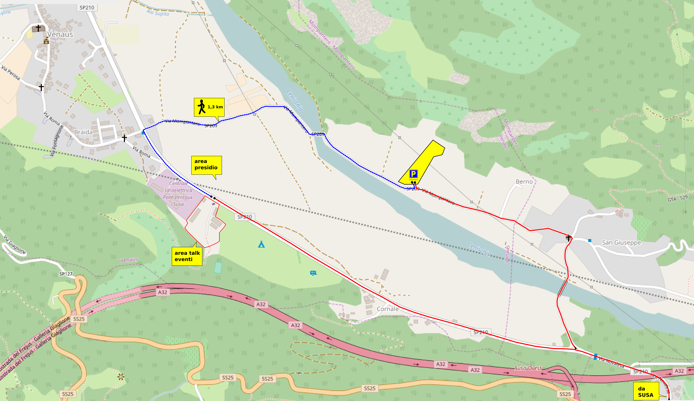

Borgata 8 Dicembre, Venaus, Val di Susa
By Train
From whichever place you are coming from, the railway station to reach is SUSA (TO). If you can, please don’t take the high-speed train: it is very expensive and it created huge damages to many places.
Hackit0x14 is 3.3km from SUSA railway station. If your luggage is not too heavy, and it’s a nice day, you could have a walk or hitchhike. Here is the path to follow: 
In the arrival day (Thursday, 15th) and leaving day (Sunday, 18th) there will be a shuttle between Hackit0x14 and the station. Remember: everything is managed by volounteers, and there will probably be a single shuttle going back and forth … relax!
By car
If you come by car, reach Susa (TO), then follow the same path shown above for people that prefer walking.
At Hackit0x14 you can unload your luggages and your travelmate near the camping, but you’ll have to leave the car in the unattended parking lot. Leaving the car at the side of the street is not a good idea: for safety reason, you could get a fine and your car could be towed away.
Leave the car at the parking (it is the yellow area with the P in the image below), follow the blue path in the map; in less than 20 minutes you’ll be at Hackit0x14 
Airplane + Train
It’s a bit harder! But if there’s no alternative… good luck! From whichever place you arrive, the nearest airport is Torino Caselle. A railway line connect the airport with the Dora GTT station in about 20 minutes. From Dora GTT you must take a bus, or bus + METRO to reach the railway station of Porta Nuova. From Porta Nuova you can get a train to Susa.
For more details, you can check on airport website and GTT website.